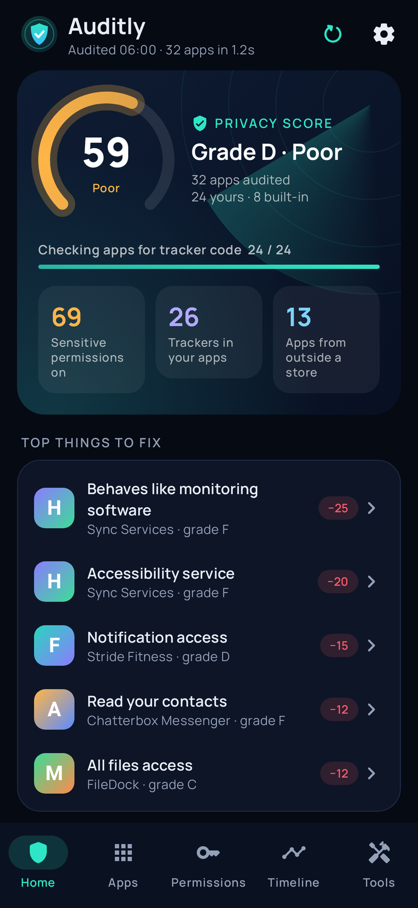
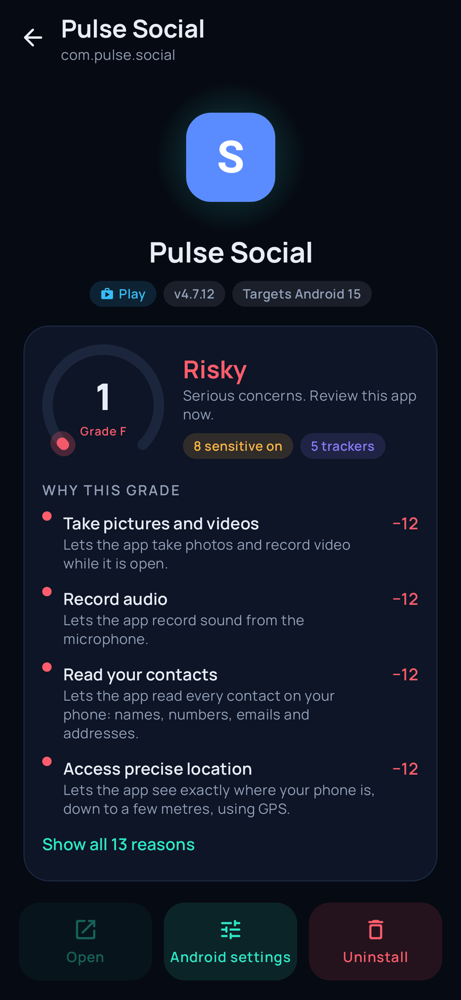
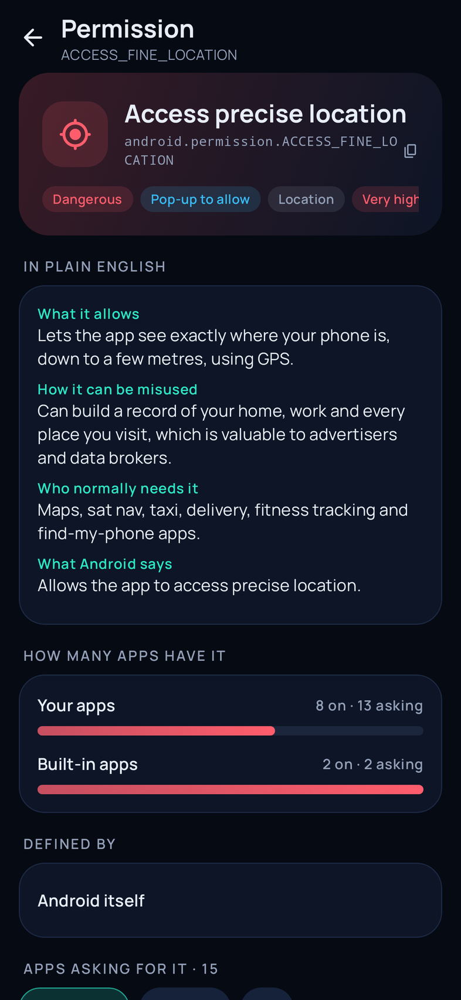
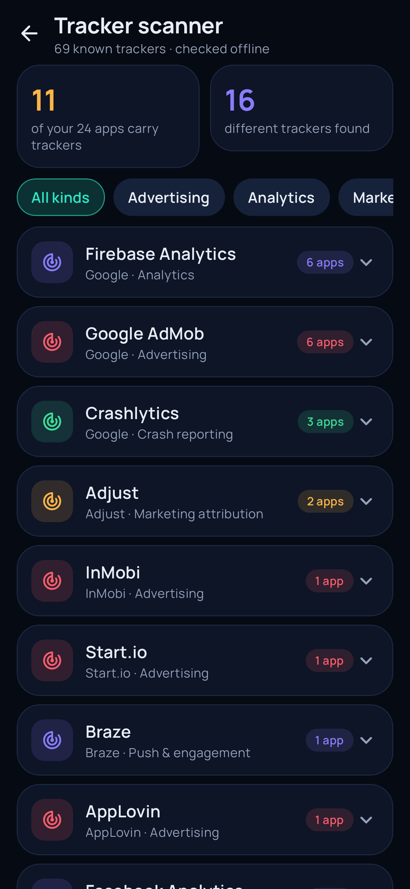
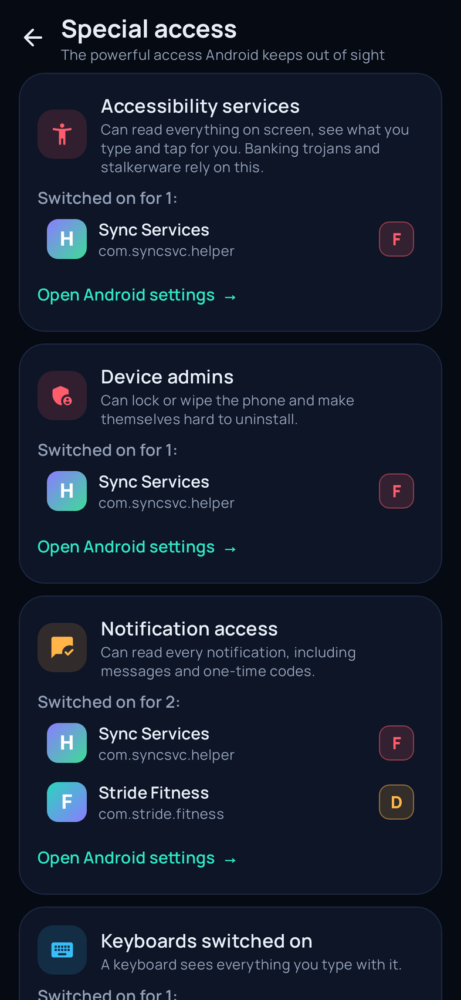
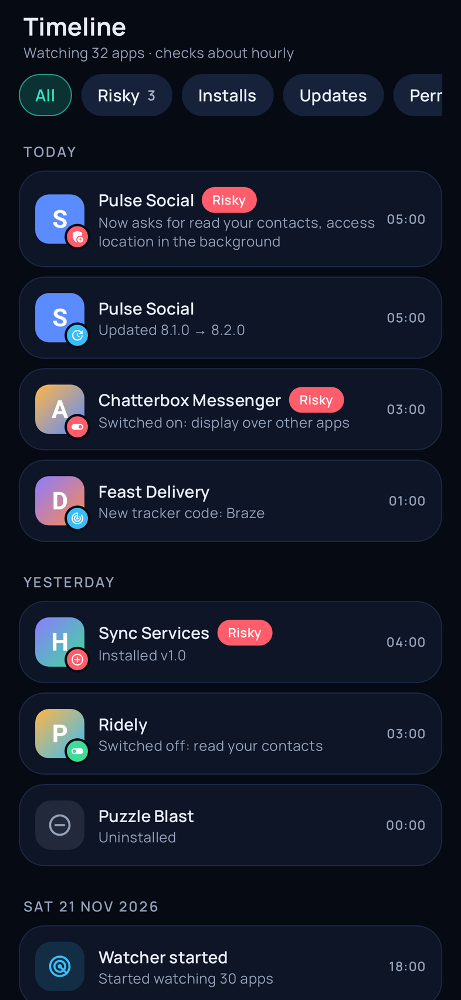
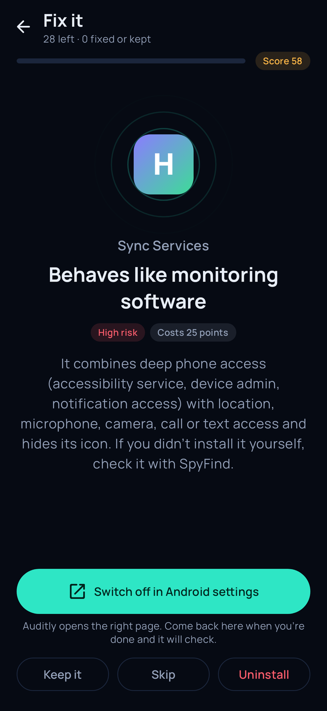
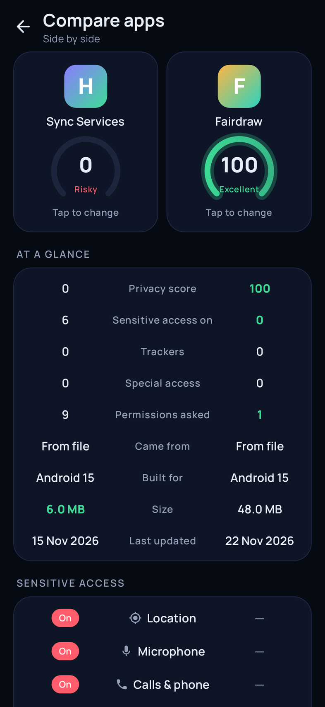
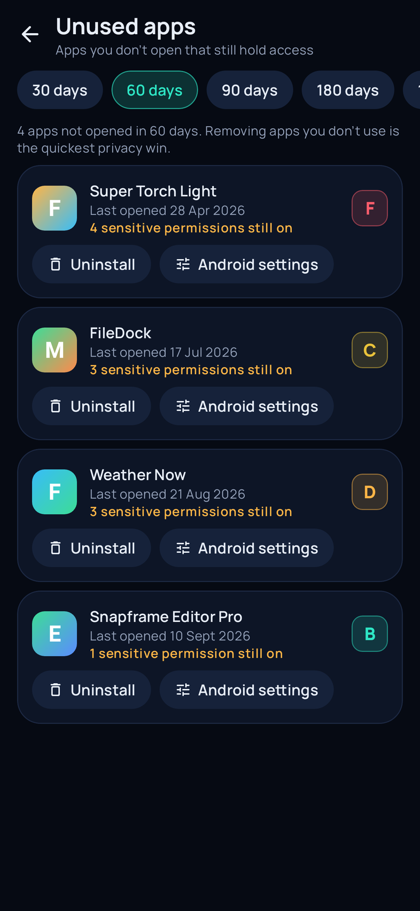
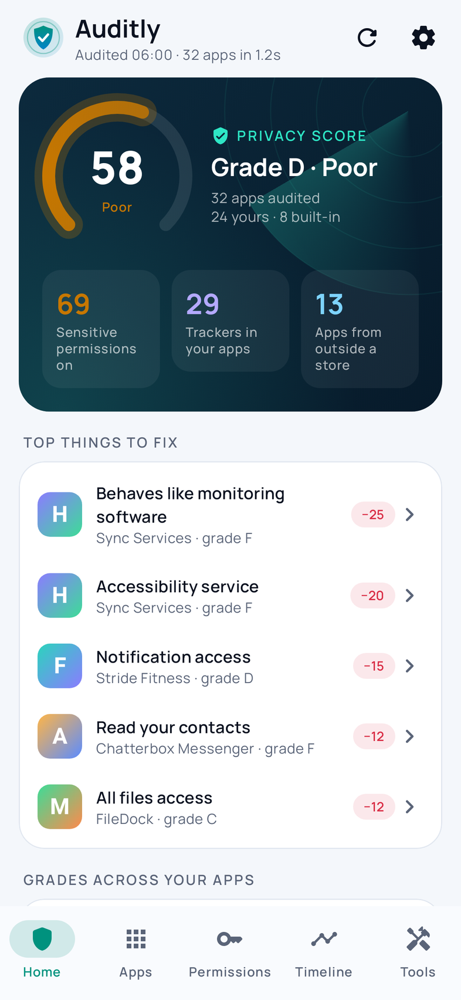

See what every app on your phone can really do.
Auditly reads every app on your phone and grades it from A to F for privacy. It explains each permission in plain English, finds the trackers built into your apps, shows which apps hold the powerful special access, and gives your whole phone a privacy score.
Then it helps you fix it: a short list of the changes that matter most, each one a tap away in Android's own settings. Auditly has no internet access, so nothing it learns about your phone can ever leave it.
Download for AndroidHow to install
- Version 1.0.0
- Android 10 or later
- 4.1 MB
Free, with nothing to unlock. No adverts, no account with the developer, no tracking. Compare or read the release notes.
Chrome may say the file might be harmful. It shows this for app files that do not come from Google Play. Choose Download anyway.

- No internet accessAuditly cannot go online at all.
- No advertsNone in the app and none on this site.
- Nothing to buyEvery feature is free, with nothing locked.
- No accountNothing to sign up for.
A look inside
These are the real screens, drawn from the app's own code with made-up apps. Swipe or scroll sideways to see them all.









How it works
Auditly reads what Android already knows about each app, and looks inside each app's own files for tracker libraries. All of it happens on your phone.
Open it
Auditly audits every app in a few seconds and gives each one a grade from A to F, and your phone a score out of 100.
Understand it
Tap any app or permission for the plain-English story: what it allows, how it can be misused, and whether this kind of app normally needs it.
Fix it
Work through Fix it, one change at a time. Switch on the watcher and Auditly tells you when an app gains a risky permission.
Everything is in, and all of it is free
Nothing below is held back for a paid tier, because there is no paid tier.
The audit
- A grade for every app
- A to F, with every reason shown and the points it costs, so you can see exactly why.
- A score for your phone
- Out of 100, from all your apps plus the phone's own settings, with the change since last time.
- Apps that don't fit
- A torch that reads your contacts or a game that wants your location is flagged as out of place.
- Monitoring software
- Apps that combine the abilities stalkerware relies on are picked out and explained.
In plain English
- Every permission explained
- What it allows, how it can be misused and who normally needs it, before you are asked anything.
- Special access
- Accessibility, notification access, device admin, usage access, display over other apps and more, in one place.
- Trackers inside apps
- Advertising, analytics and crash reporting libraries found in each app's code, without running it.
- The full detail
- Signing certificate, install source, components and the full manifest, for those who want it.
Fix and keep watch
- Fix it
- The changes that matter most, one at a time, each opening the right page in Android's settings.
- The watcher
- Optional alerts when an app is installed or updated with new risky permissions, checked about hourly.
- Timeline
- Every install, update, removal and permission change, kept encrypted on the phone.
- Unused apps
- Apps you have not opened in months that still hold sensitive permissions.
Your way
- Reports
- A PDF privacy report, a spreadsheet and the full data as JSON, saved where you choose.
- Compare
- Any two apps side by side.
- App lock and privacy
- Fingerprint or screen lock, and hidden from the recent apps screen.
- Themes and a widget
- Dark, light, match your phone or your wallpaper's colours, and a privacy score widget.
Private by design
No internet at all
Auditly does not hold Android's internet permission. It cannot send anything anywhere.
Encrypted on the phone
The timeline, snapshots and tracker results are encrypted with a key held in the phone's secure hardware.
Every permission explained first
Each permission Auditly can use is explained before Android asks, and every one is optional.
Installing and updating
Auditly is not on Google Play, so your phone asks a couple of extra questions the first time.
Download the app file
Tap Download on your phone. The file is called Auditly.apk and is about 4.1 MB. If Chrome says the file might be harmful, choose Download anyway.
Allow the install
Open the file. The first time, Android asks you to allow your browser to install apps. Allow it, go back and tap Install. If Google Play Protect steps in, choose More details, then Install anyway.
Updating later
Auditly never goes online, so it cannot check for updates itself. Settings, About, Check for updates opens the release notes in your browser. Install the new file over the old one and your timeline and settings are kept.
Version 1.0.0, released 24 November 2026. See the release notes, or check your download.
Questions
Is Auditly really free?
Yes. There is no paid version, no subscription and no adverts, and nothing in the app is locked.
Is it on Google Play?
No. Auditly is a personal project and is downloaded from this site as an Android app file. It needs Android 10 or later.
Why does it need to see all my apps?
To audit them. Android lets Auditly list installed apps and read the permissions each one asks for. That list never leaves your phone, because Auditly has no internet access.
Can Auditly change other apps' permissions?
Not by itself: Android does not let one app change another's permissions. Fix it opens the right page in Android's settings so you can change it in one tap. With the optional Power mode (using the free Shizuku app) it can switch off a permission or freeze an app directly.
How does it find trackers?
It looks inside each app's own code for the names of 69 known advertising, analytics and crash-reporting libraries. Nothing is run and nothing is sent anywhere.
Why is the watcher only hourly?
Android does not tell other apps straight away when an app is installed or updated, so Auditly checks about once an hour. Uninstalls are noticed straight away. The watcher is optional and explained before you switch it on.
What does usage access do?
Only the Unused apps tool uses it, to see when you last opened each app. It is off until you switch it on, and Auditly explains it first.
Does a low grade mean an app is dangerous?
No. A grade measures how much an app can reach, not what it does with it. A messaging app needs your contacts and microphone. The reasons under each grade tell you whether that kind of app normally needs that access.
Does it work on an iPhone?
No. Auditly is for Android phones and tablets only.
Who made it?
Auditly is made by Jonathan Jackson, an independent developer in the United Kingdom.
Know what your apps can do
Free, with no adverts and nothing to unlock. Made by the developer of several other free Android apps: see them all.